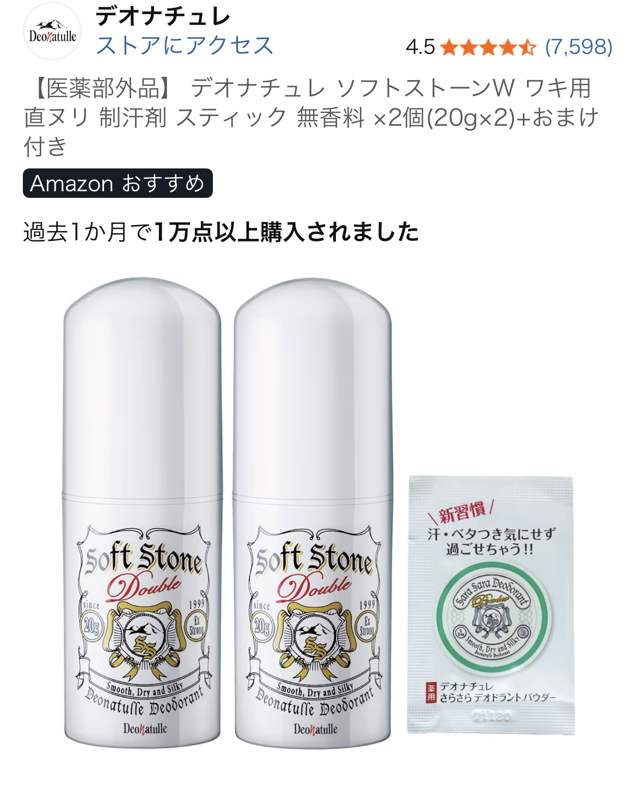

添付の口コミでは、ユーザーが「朝から晩まで効果が長持ちする」と高く評価していました。 液状タイプではなく、リップクリームのように直接塗り込む固形スティック型であるため、 肌への密着度が高く、汗をかいても落ちにくい点が特徴です。
また、匂いがほぼ無臭である点も評価されており、香り付き制汗剤が苦手な人でも使いやすい仕様です。 パートナーも消臭効果を感じたという声があり、実際の使用感としての信頼性があります。
制汗剤には大きく分けて「スプレー」「ロールオン」「クリーム」「スティック」の4種類があります。 この中でスティックタイプが長持ちしやすい理由は以下の通りです。
デオナチュレ ソフトストーンは「焼ミョウバン（アルム石）」を主成分としており、 これは古くから消臭・制汗に使われてきた成分で、汗の酸化臭を抑える働きがあります。
・8×4の液状タイプから乗り換えたところ、ソフトストーンの方が明らかに長持ちした ・朝に塗るだけで夜まで効果が続く ・無臭で使いやすい ・パートナーも消臭効果を実感 ・肌に塗り込むタイプなので、人によっては合わない可能性あり
スティックタイプは密着性が高い反面、肌が弱い人は摩擦や成分刺激を感じる場合があります。 特にワキの皮膚は薄くデリケートなため、以下の点に注意すると安心です。
デオナチュレ ソフトストーンは、口コミでも実証されている通り、 「朝から晩まで続く持続力」と「無臭で使いやすい点」が大きな魅力です。 スティックタイプ特有の密着性と、ミョウバン成分の消臭力が組み合わさり、 一般的な液状タイプよりも長持ちしやすい傾向があります。
一方で、肌質によっては合わない場合もあるため、初めて使う人は少量から試すと安心です。 長時間のニオイ対策を求める人には、非常に有力な選択肢と言えるでしょう。